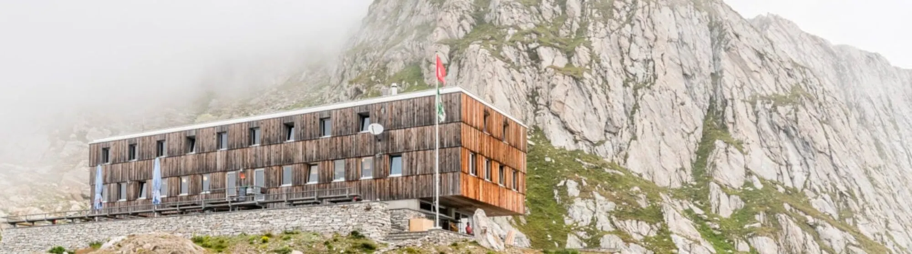
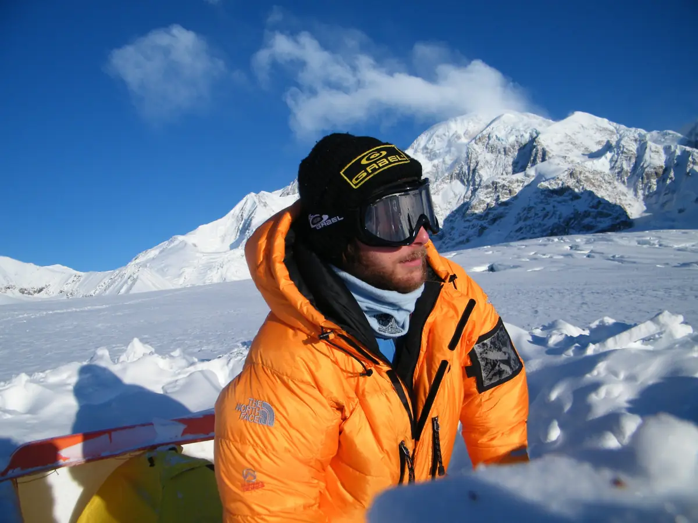
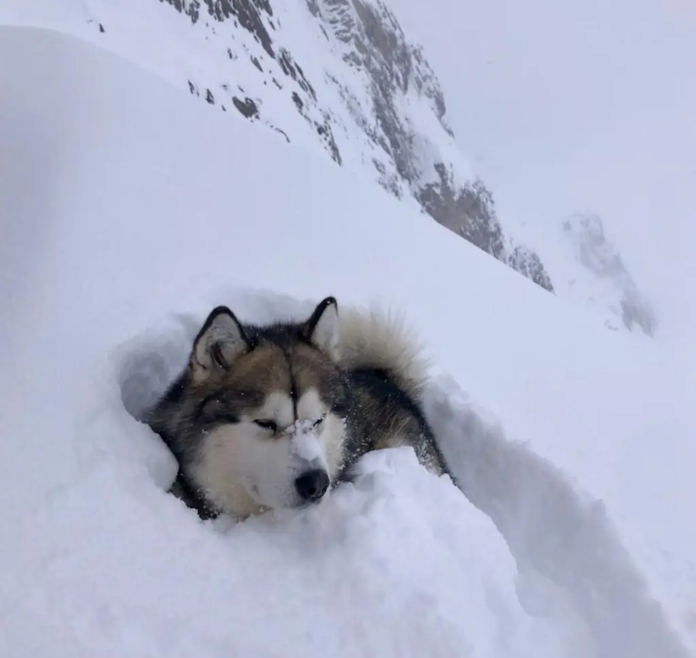
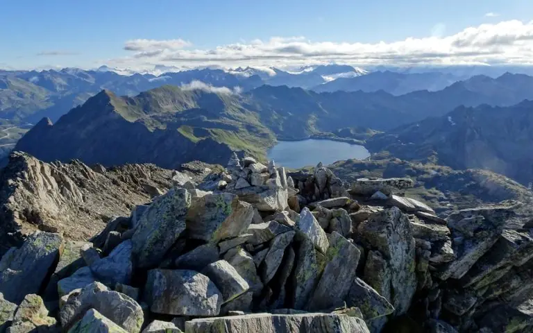
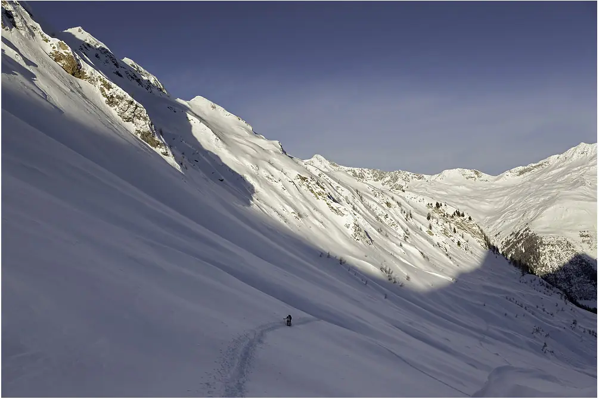
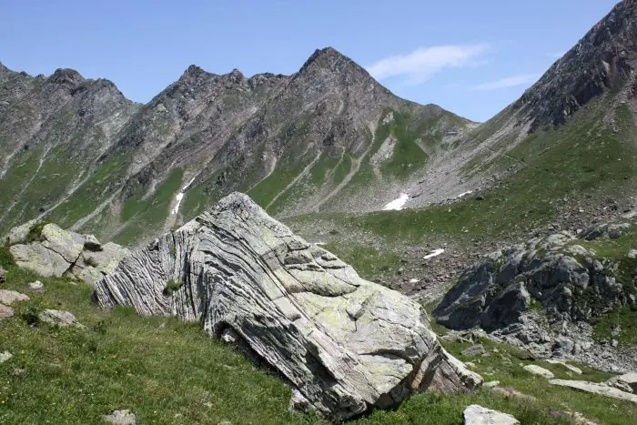

Cristallina
Passo Cristallina, Valle Bedretto
- Altitudine
- 2575 m
- Posti letto
- 100
- Custodia
- da giugno a metà ottobre; d’inverno nei fine settimana e nei festivi

La capanna
Progettata dagli architetti Baserga e Mozzetti e inaugurata nel 2003, è il primo rifugio moderno costruito dal Club Alpino Svizzero. Sorge sul passo, in un punto strategico tra Leventina e Valle Maggia: tappa panoramica sulle traversate verso Robiei, il Naret, il Campo Tencia e il San Giacomo. Il giro dei laghi del Cristallina, di uno o due giorni, è adatto anche alle famiglie; in un’ora si raggiungono il Cristallina e la Cima di Lago. D’inverno, raggiungibile soprattutto da nord, apre pendii splendidi verso la Valle Bedretto, Robiei e la Val Formazza.
La prima capanna moderna del Club Alpino Svizzero sorge a 2575 m sul Passo Cristallina, in una zona molto bella per l’escursionismo estivo e invernale. D’estate è il punto d’appoggio per le cime vicine e per le traversate verso la Valle Maggia, la Val Formazza e il Gottardo; d’inverno la regione, ricca di neve, offre splendide discese e concatenamenti di vette.
Ha 100 posti letto in cuccette con piumone, in 6 camere da 4, 9 da 8 e 2 dormitori da 12, un refettorio panoramico con terrazza, servizi interni con acqua calda, doccia, locale essiccatoio e locale scarponi con ciabatte per gli ospiti. Il sacco lenzuolo è obbligatorio. Buona ricezione Swisscom vicino alla capanna.
Soggiorno
- Apertura
- Sempre aperta e accessibile
- Custodia
- Da giugno a metà ottobre; d’inverno, da dicembre a fine aprile, con buone condizioni, nei fine settimana, nei giorni festivi e per i gruppi
- Posti letto
- 100
- Pasti
- Preparati dal guardiano tutto il giorno
- Bibite
- Disponibili anche in assenza del guardiano
Arrivare
- Cartina
- CNS 1251 Bedretto, coordinate 683.550 / 147.300
La cucina
Durante il giorno ricette semplici alla portata di tutti: gnocchi, ravioli, torte salate, salumi, dolci e tanto altro, tutto fatto in capanna con prodotti locali di origine svizzera. Per la mezza pensione i menu cambiano secondo il giorno della settimana, pensando anche ai vegetariani. Vi aspetta inoltre una buona scelta di vini e distillati.
Importante: avvisateci in tempo se siete vegetariani o vegani, o se avete allergie o intolleranze: cercheremo di prepararvi un menu adatto.
Le camere si assegnano secondo l’ordine delle riservazioni e la grandezza dei gruppi; non si possono riservare camere a uso esclusivo. Quando la capanna è custodita la mezza pensione è obbligatoria.
I cani sono benvenuti, ma non sono ammessi nelle camere e negli spazi comuni: avvisateci prima dell’arrivo.
Il guardiano

Emanuele Vellati gestisce la capanna dall’inverno 2018. Elettricista e cuoco di formazione, la conduce con grande cura e dedizione, come mostrano le infrastrutture curate e l’ottima cucina. Appassionato alpinista in gioventù, oggi vive la montagna ogni giorno, come essenza del suo lavoro.
D’estate e d’inverno lo affiancano numerosi aiutanti, amici e volontari del CAS Ticino, sempre felici di un piccolo ringraziamento. E poi c’è Jack, il più pacifico e curioso abitante della capanna, che ama la neve fresca quasi più di noi.
Emanuele

Tariffe e prenotazioni
PrenotaSoci CAS/FAT e club con diritto di reciprocità
Pernottamento con mezza pensione (cena e colazione), IVA e tassa di soggiorno incluse
- Bambini fino a 7 anni
- Fr. 30.–
- Ragazzi da 8 a 14 anni
- Fr. 50.–
- Giovani da 15 a 21 anni
- Fr. 70.–
- Adulti dai 22 anni
- Fr. 83.–
- Guide alpine
- Fr. 55.–
Non soci
Pernottamento con mezza pensione (cena e colazione), IVA e tassa di soggiorno incluse
- Bambini fino a 7 anni
- Fr. 30.–
- Ragazzi da 8 a 14 anni
- Fr. 55.–
- Giovani da 15 a 21 anni
- Fr. 77.–
- Adulti dai 22 anni
- Fr. 95.–
Famiglie e gruppi
Sconto infrasettimanale per famiglie (domenica-giovedì) e offerta per gruppi di giovani: scuole, scout, corsi G+S (lunedì-giovedì)
- Famiglie: riduzione per ogni bambino sotto i 15 anni
- Fr. 5.–
- Gruppi: bambini fino a 14 anni
- Fr. 40.–
- Gruppi: ragazzi da 15 a 18 anni
- Fr. 50.–
Extra
Per ragioni igieniche il sacco lenzuolo è obbligatorio
- Lunch
- Fr. 12.–
- Tè in thermos per la giornata, con il lunch
- incluso
- Doccia (a persona)
- Fr. 5.–
- Sacco lenzuolo monouso
- Fr. 7.–
- Si accetta solo contante in franchi svizzeri, niente euro.
- Riservazione online con il pulsante «Prenota»: indicate allergie, intolleranze e vegetariani nell’apposita casella.
- Annullate la prenotazione entro due giorni prima dell’arrivo, se serve anche per telefono o e-mail; vale il regolamento sul mancato arrivo (no-show).
Come arrivare
D’estate la capanna si raggiunge a piedi in qualche ora di cammino, per lo più su itinerari adatti alle famiglie; d’inverno con gli sci dalla Valle Bedretto, da Robiei o dalla Val Formazza.
- Da Ossasco: 3 h 30.
- Dal Passo San Giacomo: 4 h.
- Da Robiei: 3 h.
- Dal Lago del Narèt: 2 h 30.
- Da Airolo Pesciüm: 5 h.
- Dalla Capanna Poncione di Braga: 4 h.
- D’inverno: da Ossasco 3 h, da All’Acqua 4 h.
In auto da nord: A2 fino ad Airolo, poi direzione Passo della Novena e Valle Bedretto. Da sud: A2 fino a Bellinzona, poi Locarno e Valle Maggia: Val Bavona per Robiei, con la funivia San Carlo-Robiei (d’estate), o Val Lavizzara per il Narèt.
Con i mezzi pubblici: treno S10 fino ad Airolo, poi bus per la Valle Bedretto. Taxi da Airolo: Marchetti Taxi +41 91 873 30 35, Gotthard Taxi +41 78 790 10 55.
Traversate ad altre capanne: Corno Gries (2338 m) 5 h; Basodino (2200 m) 2 h; Poncione di Braga (1870 m) 4 h; Garzonera (2000 m) 5 h, T5; Rifugio Maria Luisa (Italia, 2393 m) 5 h.
Cartine: CNS 1:25’000 foglio 1251 Val Bedretto; carta scialpinistica 265 S Nufenenpass.
Attività
Il Passo Cristallina è un collegamento naturale tra il massiccio del Gottardo e la Valle Maggia, al centro di una rete di itinerari e rifugi: la Via Idra, la Via Cristallina e la Via Alta della Valle Maggia passano di qui. D’inverno è un paradiso dello sci alpinismo, con neve garantita anche nelle annate peggiori.
La geologia racconta la nascita delle Alpi: marmi di origine marina addossati a rocce magmatiche, pieghe incredibili. La fauna è ricca: la colonia di stambecchi verso la Cima di Lago, camosci, l’aquila, il gheppio. E ovunque le tracce del lavoro dell’uomo: alpeggi, opere militari e grandi impianti idroelettrici.

Proposte di gite
Cinque itinerari di media difficoltà, dalla Cima di Lago alla Via Idra, con la capanna come base o come tappa.

In inverno
Vette e discese in neve polverosa: più discese in una sola giornata intorno alla capanna.

Curiosità
Occupazione militare, nascita delle Alpi e grandi impianti idroelettrici: approfondimenti sulla zona del Cristallina.
Dalla capanna
Le ultime notizie della capanna, pubblicate dai guardiani su Facebook.
Apri la pagina FacebookI post vengono caricati da Facebook solo dopo il clic: da quel momento Facebook riceve dati sulla tua visita.
Senti il guardiano prima di partire
Verifica sempre la presenza del guardiano e le condizioni della montagna.
- Guardiano
- Emanuele Vellati
- Telefono
- +41 91 869 23 30
- cristallina@casticino.ch